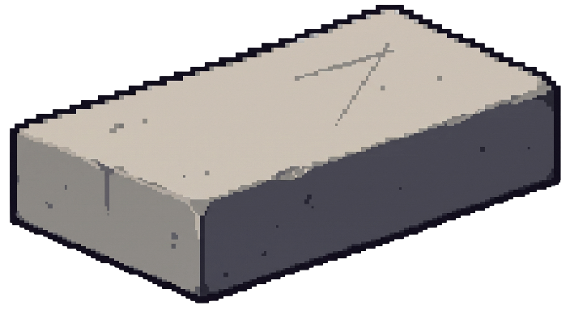

Whetstone
MIT · NODE ≥ 22
REV. 2026‑08

Your definition of correct, enforced.
Whetstone captures what correct means in your repo as plain files in git, then enforces it with a deterministic engine that calls a model only where judgment is irreducible.
It gates your changes, whoever wrote them.
Output · the exit code is the enforcement
| Code | Outcome | What it means about your change |
|---|---|---|
| 0 | Passed | Every check that applied ran, and none of them failed. |
| 0 | Uncovered | No check matched these paths. It says so rather than implying a pass, and lets you through: blocking here is what teaches people --no-verify. |
| 1 | Blocked | A check ran and failed. The only outcome that is a verdict on your change. |
| 2 | Incomplete | A check that could have blocked never ran. The gate is broken, not your change, and the two never share a message. |
Four outcomes where most gates have two. Splitting failed from could not run is the difference between a gate you trust and one you learn to route around.
Operation
In a terminal, wst with no arguments opens a launcher over these commands. One row each, saying what it reads, what it writes and what its exit code means; the rows this repo cannot run yet say what they are waiting for. It runs the one you pick and comes back. Off a terminal it prints the help, because a menu waiting for a keypress in a CI job hangs where nobody can see it.
Four more commands maintain an install rather than run the loop. wst status says what is armed and what is not, wst triage shows which discipline a change earns before the gate acts on it, wst config chooses which judge runs the llm checks, and wst update reports what has drifted since init wrote the repo, without writing anything back.
What lands in your repository
.wst/ constitution.md what your project holds non-negotiable triage.yaml which paths earn which discipline checks/ one file per check, with what earned it skills/ rules that travel with the repo memory/ decisions, signals, retro log .githooks/pre-push where the exit code actually stops a push AGENTS.md rendered from the above, never the source
Plain text, all of it. Delete the directory and the tool is gone; nothing else knows you installed it. Three runtime dependencies, no services, nothing to host.
A check Whetstone brings itself arrives switched off, with the friction that earned it recorded in the file. Its logic ships with the binary, so it runs as wst check run <id> and not as a script nobody wrote in your repo.
A judgment check earns the right to block by measurement, not by assertion: severity: block on an llm check fails to load without a calibration receipt whose hashes still recompute. This project's own review lens measured 100 of 100 correct across ten fixtures before it earned that, and the receipt binds the prompt, the fixtures, the model and the runtime, so changing any one of them drops the authority rather than carrying it over.